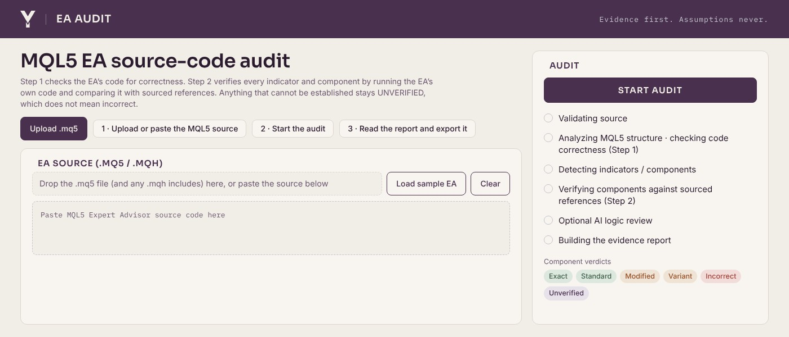

YV EA Audit
Upload or paste an MQL5 Expert Advisor and get a plain report on what is wrong in the code before you spend time testing it.

(opens full-size image)- Finds missing margin and stop-level checks, unchecked indicator reads, risky loops and state bugs
- Checks each indicator against its original source instead of trusting its name
- Explains the problem, why it matters and the exact lines affected
- Suggests corrected code when you ask for it
Each indicator in the EA gets one of these verdicts
ExactStandardModifiedVariantIncorrectUnverified
- For
- MQL5 EA developers and testers
- Needs
- Web browser
- Access
- Restricted, on request. Pricing not announced.
- Limits
- A code review only. A clean audit does not mean an EA is profitable.
In private useRequest access